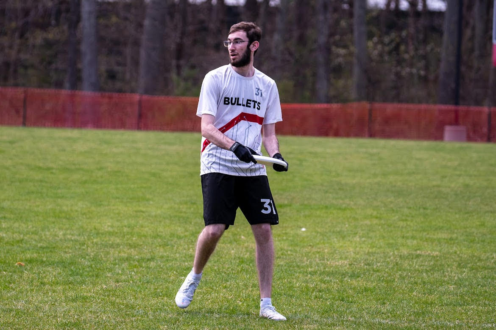

About Me
Welcome!
 I grew up in Needham, Massachusetts, thirty minutes southeast of Boston. I came to Worcester Polytechnic Institute seeking the opportunity to work with world-class engineers and gain hands-on experience with robotics. While at WPI, I'm pursuing dual Bachelor's and Master's degrees in robotics. I'm driven to develop engineering solutions that cross disciplines to find solutions to complex problems. I believe that robotics is the field of the future, and I hope to be at the forefront of that field, designing innovative ways to use robots to help people.
When I'm not working on robotics, I'm the president of Rho Beta Epsilon, WPI's Robotics Honor Society, helping support the robotics community at WPI and beyond. I'm also the president of the WPI Esports Club, seeking to grow collegiate esports and provide opportunities for players and schools to get involved with high-level competition. If I'm not in the robotics lab or at a leadership meeting, I can be found playing ultimate frisbee, cheering on Boston sports, and seeking out the perfect breakfast spot in town.
Now reading: The Atlas Complex, Olivie Blake
Now watching: The Usual Suspects, Bryan Singer
Now listening: In Rainbows, Radiohead